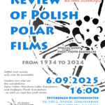
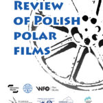

We wrześniu 2025 r. rozpoczynamy Przegląd Polskich Filmów Polarnych.
Dzięki współpracy z Wytwórnią Filmów Oświatowych i Filmoteką Śląską zebraliśmy kilka produkcji od 1934 do 2024 roku, które będziemy mogli Wam zaprezentować:
1. Ocalały fragment filmu pt. „Do Ziemi Torella” Witolda Biernawskiego przedstawia I Polską Wyprawę na Spitsbergen w 1934 roku. Ciekawostką jest to, że jeszcze do niedawna był on uważany za zaginiony. Kopia 1 szpuli tego filmu znajduje się w archiwum Wytwórni Filmów Oświatowych.
2.”Spitsbergen 1973″ – fragment amatorskiego filmu Jana Żyszkowskiego z archiwum Filmoteki Śląskiej o Wyprawie Polarnej Uniwersytetu Wrocławskiego na Spitsbergen w latach 70.
3.”Stacja Arctowski” Ryszarda Czajkowskiego z 1977 roku – filmowy reportaż z budowy Polskiej Stacji Antarktycznej na Wyspie Króla Jerzego.
4. „Zimny Ląd” Bolesława Kapuścińskiego i Kazimierza Błahija – wspomnienie o Wyprawie Uniwersytetu Śląskiego na Spitsbergen w 1983 roku. Materiał zeskanowany w Filmotece Śląskiej.
5.”Niewyraźny klekot ptaków” Franciszka Berbeki – jedna z ostatnich produkcji Wytwórni Filmów Oświatowych (2024). Niezwykła historia legendy polskiego filmu przyrodniczego – Włodzimierza Puchalskiego. Zobaczymy unikalne materiały archiwalne WFO dotyczące jego podróży na Spitsbergen i Wyspę Króla Jerzego. Zwiastun: https://www.youtube.com/watch?v=9iokl3MrPmU
Pierwszy pokaz odbędzie się w Polskiej Stacji Polarnej Hornsund na Spitsbergenie 1 września 2025
Na drugi zapraszamy do Spitsbergen Artists Center w miejscowości Longyearbyen na Svalbardzie dnia 6.09. Gościem specjalnym będzie prof. Piotr Głowacki. Wstęp wolny, ale obowiązuje rezerwacja miejsc. Prosimy o maila z potwierdzeniem przybycia najpóźniej dzień przed wydarzeniem (artists.nybyen(a)gmail.com).
O kolejnych spotkaniach w ramach Przeglądu Polskich Filmów Polarnych będziemy informować na bieżąco.
Organizator: Polski Klub Polarny
Partnerzy: Filmoteka Śląska, Polska Stacja Antarktyczna im H. Arctowskiego, Polska Stacja Polarna Hornsund, Spitsbergen Artists Center, Wytwórnia Filmów Oświatowych.
Patronat: Instytut Biochemii i Biofizyki PAN, Instytut Geofizyki PAN, Komitet Badań Polarnych, Muzeum Badań Polarnych, Polskie Konsorcjum Polarne, Polskie Towarzystwo Geograficzne oraz Svalbard Integrated Arctic Earth Observing System.
{kind=link}
 |
 |
 |
{kind=link}
{kind=link}
← Wszystkie aktualności